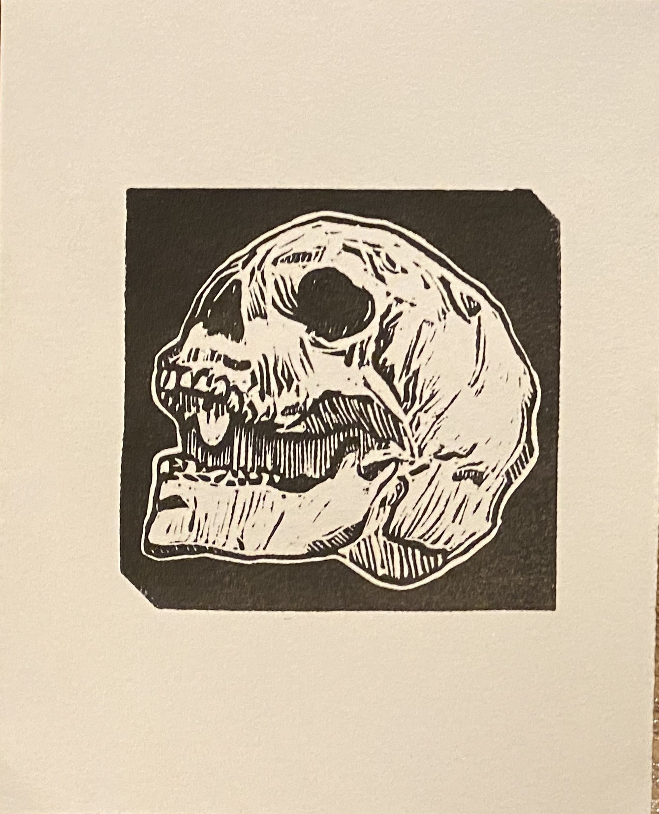

Brush Your Teeth
Oct 2021
3" x 3"
Linocut, black ink
ABOUT
This piece actually started as a part of my artober in 2021. I thought to myself "this is maybe the best skull I'll ever draw". I wanted to be able to make a million copies of it. So here's the print that came to be as a result. It feels like a signature stamp, but I love that every time I print it, it's just a little different. I think it's one of the first times I ever truly felt like "each print being unique is a beautiful thing" about my own work.